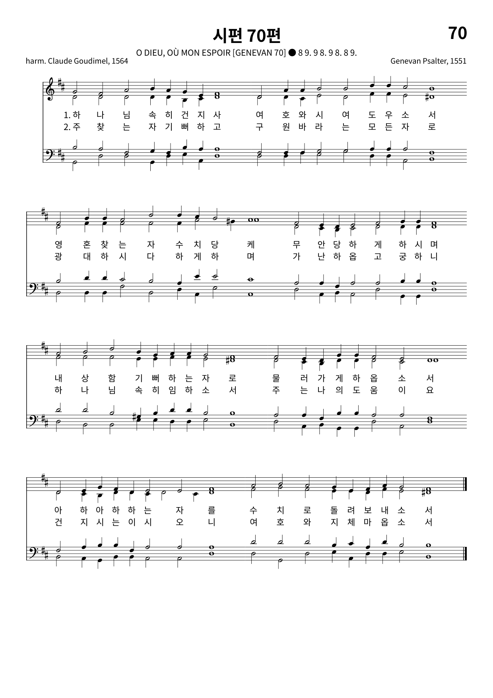

Psalm 70
O DIEU, OÙ MON ESPOIR [GENEVAN 70] · 8 9. 9 8. 9 8. 8 9.
English title: Be Pleased to Save Me, God, I Pray
Tune: Genevan Psalter, 1551 · Harmony: Claude Goudimel, 1564 · Lyrics: Korean adaptation of Psalm 70 from the Korean Revised Version (AI draft adaptation · not yet theologically reviewed) · 2 stanzas
Score PDF MusicXML (for printing) MusicXML (for accompaniment, with prelude and repeats) Read Psalm 70 (Korean Revised Version)
Score
← Psalm 69B ListAccompaniment (in preparation)Psalm 71A →
Lyrics (Korean)
Stanza 1 (Ps. 1~3)
하나님 속히 건지사
여호와시여 도우소서
영혼 찾는 자 수치 당케
무안 당하게 하시며
내 상함 기뻐하는 자로
물러가게 하옵소서
아하 아하 하는 자를
수치로 돌려보내소서
하나님 속히 건지사
여호와시여 도우소서
영혼 찾는 자 수치 당케
무안 당하게 하시며
내 상함 기뻐하는 자로
물러가게 하옵소서
아하 아하 하는 자를
수치로 돌려보내소서
Stanza 2 (Ps. 4~5)
주 찾는 자 기뻐하고
구원 바라는 모든 자로
광대하시다 하게 하며
가난하옵고 궁하니
하나님 속히 임하소서
주는 나의 도움이요
건지시는 이시오니
여호와 지체 마옵소서
주 찾는 자 기뻐하고
구원 바라는 모든 자로
광대하시다 하게 하며
가난하옵고 궁하니
하나님 속히 임하소서
주는 나의 도움이요
건지시는 이시오니
여호와 지체 마옵소서